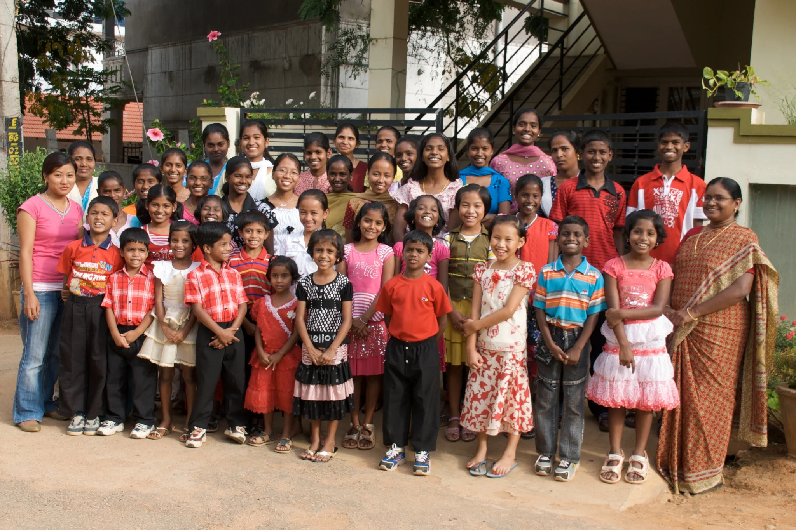
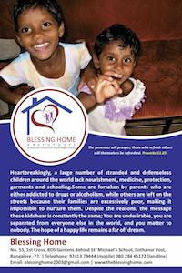
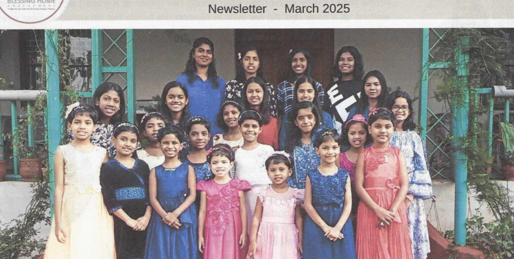
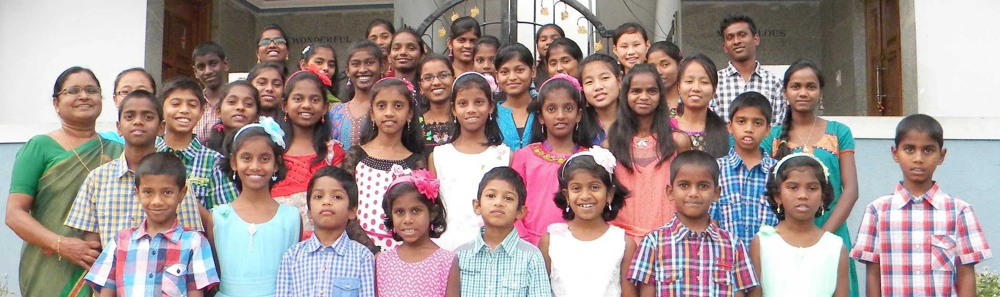

The Blessing Home is giving residential care to Indian children who were previously at risk in Bangalore India and beyond.
How We Got Here
In August 2003, we started to save a small number of children from the abusive and uncaring environment of the slum districts of Bengaluru (Bangalore) and poor villages beyond. We believe Blessing Home will make a big difference to these young lives. The Home currently cares for 22 children in residence, and also helps many more families through school fees and monthly provisions.
What We Do
Blessing Home is a safe home in Bangalore India where children feel secure and relaxed, have healthy meals, a bed, clean clothes and lots of love. All of our children attend English medium schools where they integrate with other children. They receive regular medical and dental attention and extra tuition is also provided to help in catching up with studies where necessary. They seize every opportunity to learn and many excel academically. Many have gone on to successful jobs and are living independently.
What We Hope
Our vision is to provide safety, nutrition, education, medical attention and love that these abandoned children deserve; to enable and empower such children to stand on their own feet, helping them become responsible citizens and to lead meaningful lives contributing to the people and society around them.
Our Brochure

Our Newsletter

Help Us Build a Home
We have purchased land and begun the foundation for a permanent home for 22 children. The estimated cost to build the home is ₹1.5 crore. Read more and find out how to help.
